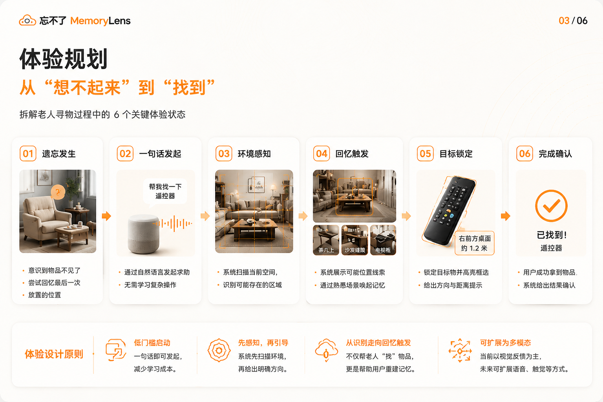
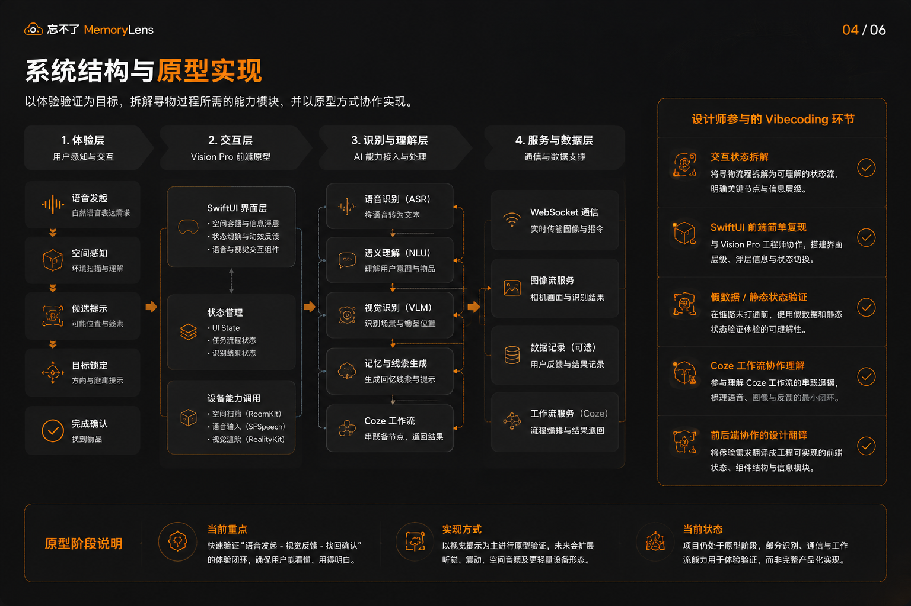
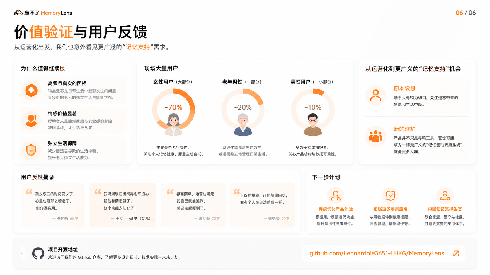
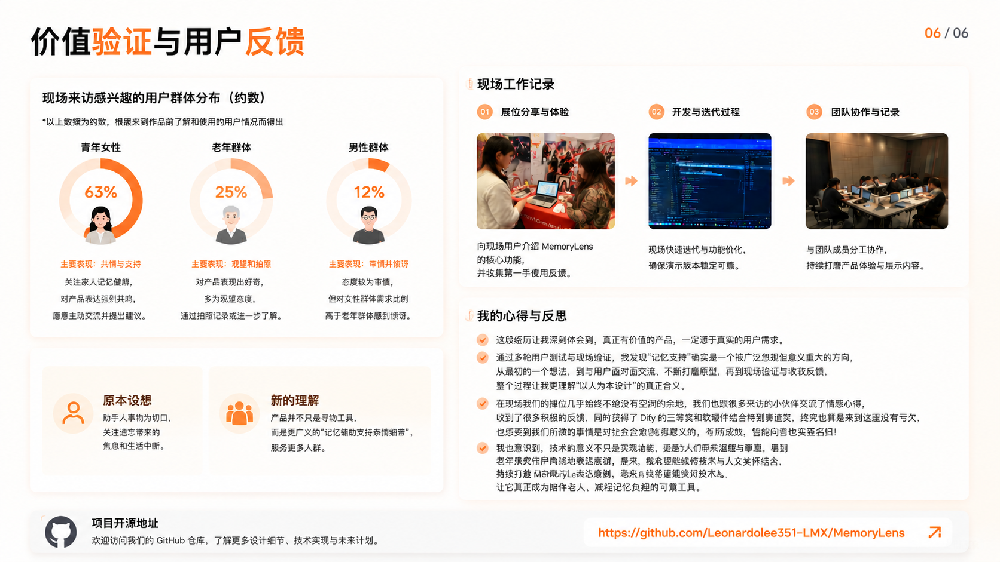
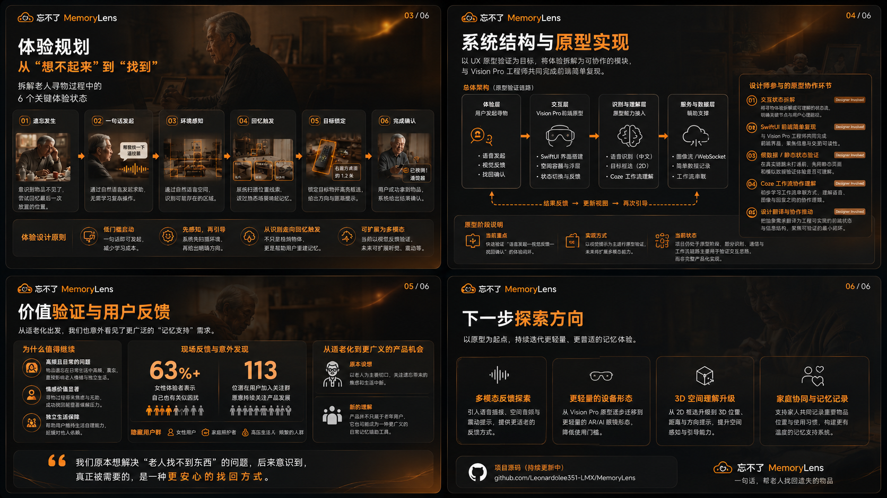
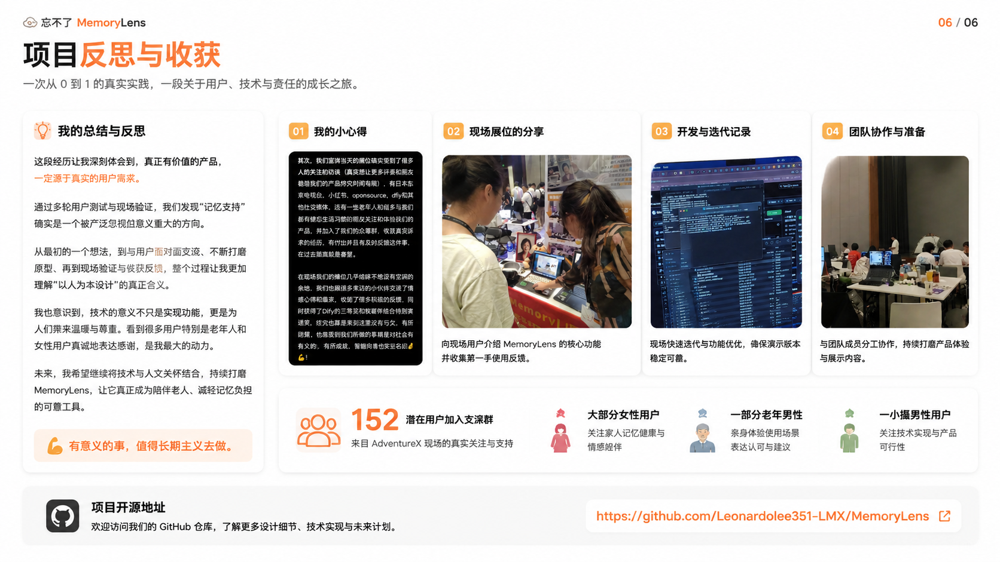

时长按案例材料写：黑客松里 48 小时以上做出可运行演示。简历里另有「五天」的写法，这里不合成一个新数字。没有用户测试。多个物体同时出现时，没有方案。
时长按案例材料写：黑客松里 48 小时以上做出可运行演示。简历里另有「五天」的写法，这里不合成一个新数字。没有用户测试。多个物体同时出现时，没有方案。
01 · 问题
老年人会把钥匙、眼镜放在一个固定的地方，过后又找不到。MemoryLens 选 Apple Vision Pro 做载体，目标是把「看见物体」收到三件事里：听懂那句话，在空间里标出目标，再用语音把方位说清楚。
问题定义停在这一句：不是单纯的目标检测，而是视觉定位、语音引导和有温度的反馈连成一次交互。概念图里的那句「你看，钥匙是不是在这里」，是这条链路的样子，不是已经验证过的用户原话。

核心概念图。空间框、物体信息和一句确认，放在同一张画面里。
02 · 寻物链路
体验上，用户用自然语言问，例如「我的钥匙在哪」。设备扫描眼前的空间，高亮目标，同时用语音给出方位。反馈分成三层：看见、语音、空间。
我负责产品体验和前端实现，用 TRAE 把可交互原型做出来。识别接的是 YOLO，语言接的是 Dify 上的工作流。这两段是系统的一部分，不写成我一个人做完了算法。


03 · 边界
视觉、语音、空间三层反馈能走通一次寻物。
没有被试人数，也没有前后对比。
冲突时怎么选，案例里没有写。
如果继续做，优先补的是用户测试，以及多物体冲突时的策略。AI 交互要落到一个具体情境里，形成可以执行的下一步，而不是停在聊天。
04 · 画面






